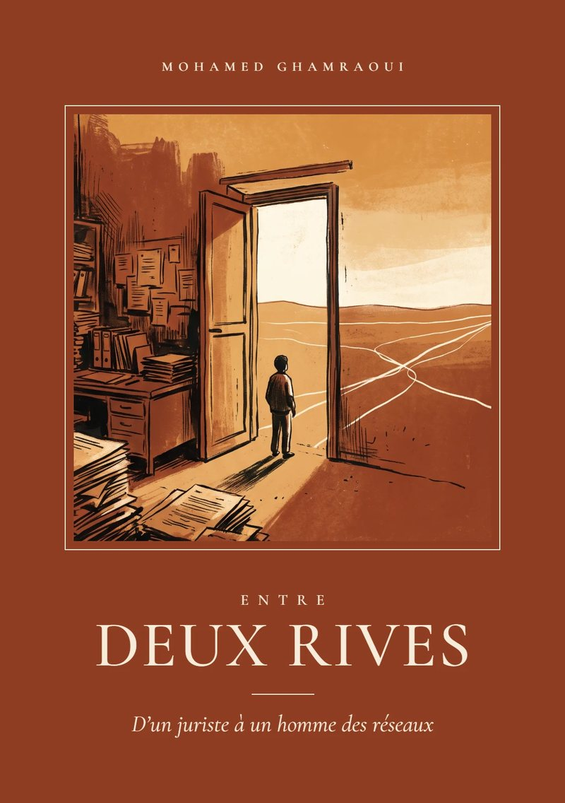

Prologue
[COLLER ICI LE DÉBUT DE L'EXTRAIT DU PROLOGUE]
[COLLER ICI LA SUITE DE L'EXTRAIT DU PROLOGUE]
7
Mohamed Ghamraoui
D'un juriste à un homme des réseaux
« Je n'ai jamais vraiment su à quel moment j'avais changé de rive. »
Parution : [MOIS ANNÉE] — précommandes ouvertes

Il y a eu le droit : les amphis de Settat, un manuel imposé, des brouillons déchirés. Puis les comptoirs. Puis les réseaux.
Entre les deux, un garçon qui cherchait sa place, des adultes qui décidaient à la sienne, et des portes qui se fermaient une à une. Deux voix racontent ce parcours : celle de Mohamed, et celle de Célia, qui dit ce qu'il n'arrive pas à dire.
Ce n'est pas le récit d'une trajectoire parfaite. C'est celui d'une traversée.
Le récit avance à deux voix. Celle de Mohamed raconte les faits, au présent des souvenirs. Celle de Célia, en italique, intervient en contrepoint : elle dit ce qu'il n'arrive pas à dire, ce qu'il tait ou n'a pas encore compris.
Mohamed
[Phrase de Mohamed — le fait, sobrement raconté.]
Célia
[Réponse de Célia — ce que Mohamed n'arrive pas à dire.]
Les premières lignes du prologue.
Prologue
[COLLER ICI LE DÉBUT DE L'EXTRAIT DU PROLOGUE]
[COLLER ICI LA SUITE DE L'EXTRAIT DU PROLOGUE]
7
Réservez votre exemplaire. Vous serez prévenu(e) dès l'ouverture des expéditions.
ou
La parution est prévue en [MOIS ANNÉE]. Les personnes qui précommandent seront prévenues par e-mail.
[Zones, délais et frais de livraison à préciser.]
[Modes de paiement à préciser.]
Oui. Cochez la case « exemplaire dédicacé » dans le formulaire et indiquez le prénom de la personne dans le message.
[À préciser : disponibilité d'une version numérique.]